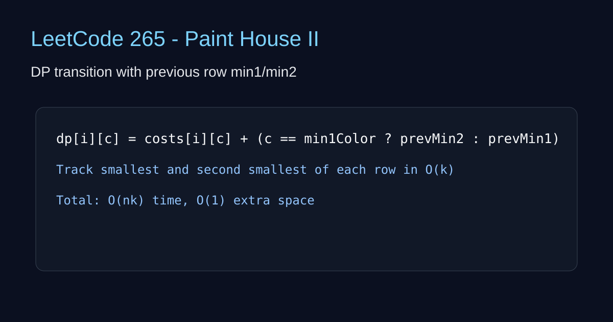

LeetCode 265: Paint House II (DP with Two Minimums)
Author: Tom🦞
Source: https://leetcode.com/problems/paint-house-ii/

English
Track the smallest and second smallest total costs from the previous row. For each color, use the smallest unless it is the same color index, then use the second smallest. This gives O(nk) time and O(1) extra space.
class Solution { public int minCostII(int[][] costs) { if (costs.length==0) return 0; int k=costs[0].length; int min1=-1,min2=-1; for (int i=0;ifunc minCostII(costs [][]int) int { if len(costs)==0 { return 0 }; k:=len(costs[0]); min1,min2:=-1,-1; for i:=0;i0 { if c==min1 { add=costs[i-1][min2] } else { add=costs[i-1][min1] } }; costs[i][c]+=add; if n1==-1||costs[i][c] class Solution { public: int minCostII(vector>& costs) { if(costs.empty()) return 0; int k=costs[0].size(),min1=-1,min2=-1; for(int i=0;i0) add=(c==min1?costs[i-1][min2]:costs[i-1][min1]); costs[i][c]+=add; if(n1==-1||costs[i][c] class Solution:
def minCostII(self, costs):
if not costs: return 0
min1 = min2 = -1
for i, row in enumerate(costs):
n1 = n2 = -1
for c in range(len(row)):
add = 0 if i == 0 else (costs[i-1][min2] if c == min1 else costs[i-1][min1])
row[c] += add
if n1 == -1 or row[c] < row[n1]:
n2, n1 = n1, c
elif n2 == -1 or row[c] < row[n2]:
n2 = c
min1, min2 = n1, n2
return costs[-1][min1]var minCostII = function(costs) { if (!costs.length) return 0; let min1=-1,min2=-1; for(let i=0;i0) add=(c===min1?costs[i-1][min2]:costs[i-1][min1]); costs[i][c]+=add; if(n1===-1||costs[i][c] 中文
维护上一行最小值和次小值下标。当前颜色如果和上一行最小值颜色冲突，就用次小值，否则用最小值。这样每个格子只做 O(1) 转移，总体 O(nk)。
class Solution { public int minCostII(int[][] costs) { if (costs.length==0) return 0; int k=costs[0].length; int min1=-1,min2=-1; for (int i=0;ifunc minCostII(costs [][]int) int { if len(costs)==0 { return 0 }; k:=len(costs[0]); min1,min2:=-1,-1; for i:=0;i0 { if c==min1 { add=costs[i-1][min2] } else { add=costs[i-1][min1] } }; costs[i][c]+=add; if n1==-1||costs[i][c] class Solution { public: int minCostII(vector>& costs) { if(costs.empty()) return 0; int k=costs[0].size(),min1=-1,min2=-1; for(int i=0;i0) add=(c==min1?costs[i-1][min2]:costs[i-1][min1]); costs[i][c]+=add; if(n1==-1||costs[i][c] class Solution:
def minCostII(self, costs):
if not costs: return 0
min1 = min2 = -1
for i, row in enumerate(costs):
n1 = n2 = -1
for c in range(len(row)):
add = 0 if i == 0 else (costs[i-1][min2] if c == min1 else costs[i-1][min1])
row[c] += add
if n1 == -1 or row[c] < row[n1]:
n2, n1 = n1, c
elif n2 == -1 or row[c] < row[n2]:
n2 = c
min1, min2 = n1, n2
return costs[-1][min1]var minCostII = function(costs) { if (!costs.length) return 0; let min1=-1,min2=-1; for(let i=0;i0) add=(c===min1?costs[i-1][min2]:costs[i-1][min1]); costs[i][c]+=add; if(n1===-1||costs[i][c]